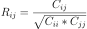

numpy.corrcoef¶
-
numpy.corrcoef(x, y=None, rowvar=True, bias=<no value>, ddof=<no value>)[source]¶ Return Pearson product-moment correlation coefficients.
Please refer to the documentation for
covfor more detail. The relationship between the correlation coefficient matrix, R, and the covariance matrix, C, is
The values of R are between -1 and 1, inclusive.
- Parameters
- xarray_like
A 1-D or 2-D array containing multiple variables and observations. Each row of x represents a variable, and each column a single observation of all those variables. Also see rowvar below.
- yarray_like, optional
An additional set of variables and observations. y has the same shape as x.
- rowvarbool, optional
If rowvar is True (default), then each row represents a variable, with observations in the columns. Otherwise, the relationship is transposed: each column represents a variable, while the rows contain observations.
- bias_NoValue, optional
Has no effect, do not use.
Deprecated since version 1.10.0.
- ddof_NoValue, optional
Has no effect, do not use.
Deprecated since version 1.10.0.
- Returns
- Rndarray
The correlation coefficient matrix of the variables.
See also
covCovariance matrix
Notes
Due to floating point rounding the resulting array may not be Hermitian, the diagonal elements may not be 1, and the elements may not satisfy the inequality abs(a) <= 1. The real and imaginary parts are clipped to the interval [-1, 1] in an attempt to improve on that situation but is not much help in the complex case.
This function accepts but discards arguments bias and ddof. This is for backwards compatibility with previous versions of this function. These arguments had no effect on the return values of the function and can be safely ignored in this and previous versions of numpy.